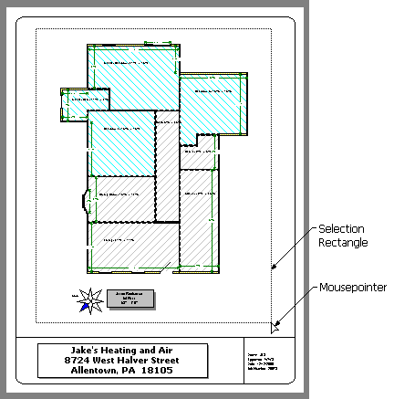

Selecting Multiple Objects |
  
|
Selecting Multiple Objects |
|
Sometimes you will want to be able to select more than one object on the drawing, such as when you need to move the entire floor plan to a different position on the page. There are two ways to do this. For both methods the drawing needs to be in regular Select mode, where the mousepointer is the default arrow (click the Select button in the Drawing Board toolbar).
1.Hold the Shift key down and click on each object that you want to select. This method is good for when you want to select certain objects in an area but not others.
2.Click and draw a selection rectangle around all the objects that you want to select. Each object that is totally within the selection rectangle will be selected. If you want to select all objects that are at least partially within the selection rectangle, press the Ctrl key while you draw it.
Note: If you are trying to move an entire floor plan, as illustrated below, after selecting everything click and drag the background polygon of one of the Room (or Zone) objects.
